정보통신산업기사 (2008-03-02 기출문제)
1과목: 디지털전자회로
1. 트랜지스터의 활성영역에서 베이스 접지시 전류증폭률 α가 0.98, 역포화 전류 lco가 100[㎂], 베이스 전류가 lB = 10[㎃]일 때, 컬렉터 전류 lc는 얼마인가?
- 495[㎃]
- 49[㎃]
- 5[㎂]
- 0.5[㎂]
(정답률: 67%)

2. 다음 회로에서 Re의 값과 관계 없는 것은? (단, 출력전압 및 전류는 컬렉터측이다.)
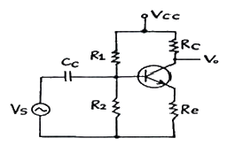
- Re가 크면 클수록 입력 임피던스는 커진다.
- Re가 크면 클수록 안정계수 S는 적어진다.
- Re가 크면 클수록 증폭된 컬렉터 전류는 적어진다.
- Re가 크면 클수록 전압증폭도는 커진다.
(정답률: 40%)
3. R과 C에 의하여 발진주파수가 결정되는 발진회로에서 시정수를 작게 하면 발진은 어떤 변화가 생기는가?
- 발진주파수가 낮아진다.
- 발진주파수가 높아진다.
- 발진주파수의 영향이 없다.
- 발진기 이득이 커진다.
(정답률: 72%)
4. 다음의 연산회로는 어느 회로인가?
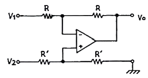
- 부호변환회로
- 미분회로
- 적분회로
- 감산회로
(정답률: 50%)
5. 그림과 같은 RC 필터회로에 관한 설명 중 틀린 것은?
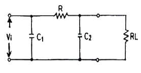
- RC 필터를 첨가함으로써 적류출력 전압이 다소 감소 된다.
- 부하에 나타나는 리플을 크게 감소시킬 수 있다.
- C1에 나타나는 전압 중 직류성분이 필터에 의해 차단되고 부하에는 교류전압만 나타난다.
- 리플의 교류성분을 감소시키기 위한 회로이다.
(정답률: 69%)
6. 다음 그림의 회로도에 해당되는 것은?
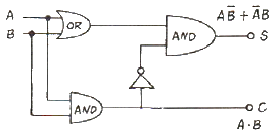
- 반가산기
- 전가산기
- 반감산기
- 전감산기
(정답률: 84%)
7. 다음 중 고주파 증폭회로에서 중화회로를 사용하는 주 목적은?
- 이득의 증가
- 주파수의 체배
- 자기발진의 방지
- 전력 효율의 증대
(정답률: 71%)
8. 그림의 논리회로에서 출력 X의 논리식은?
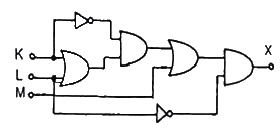
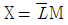
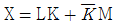
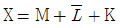
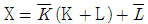
(정답률: 72%)
9. FM의 변조지수가 7.5일 때 10[KHz]의 신호를 FM으로 변조하면, 이 경우 주파수 대역폭은 몇 [KHz]인가?
- 75
- 170
- 320
- 150
(정답률: 38%)
10. 그림과 같은 회로의 입력에 정현파(Vi)를 인가했을 때의 전달 특성은? (단, 다이오드의 동작시 저항성분은 Rf 이며, Rf ＜ R)
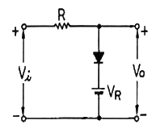
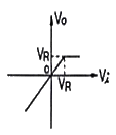
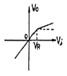
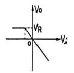
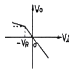
(정답률: 70%)
11. 저역통과 RC 회로에 양의 스텝(step) 전압 입력을 공급할 때 출력 파형에 가까운 것은?
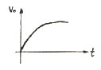
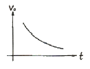
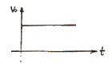
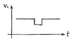
(정답률: 82%)
12. CR 발진기의 설명으로 가장 적합한 것은?
- C 및 R을 사용하여 정궤환에 의하여 발진한다.
- 부성저항을 이용한 발진기이다.
- C 및 R로서 부궤환에 의하여 발진한다.
- 압전기 효과를 이용한 발진기이다.
(정답률: 77%)
13. 다음 중 비동기식 카운터와 관계 없는 것은?
- 고속계수 회로에 적합하다.
- 리플 카운터라고도 한다.
- 회로 설계가 동기식보다 비교적 용이하다.
- 전단의 출력이 다음 단의 트리거 입력이 된다.
(정답률: 77%)
14. 다음 중 주파수 변조방식의 특징이 아닌 것은?
- 진폭 변조보다 레벨 변동 및 잡음에 강하다.
- 평형 변조기를 사용한다.
- AFC 회로가 필요하다.
- 변별기를 이용하여 복조한다.
(정답률: 56%)
15. 다음 중 불 대수식 A+BC 와 등가인 것은?
- AB(A+C)
- (A+B)(A+C)
- (A+B)AC
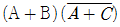
(정답률: 74%)
16. 다음 그림과 같은 회로의 시정수(time constant)는?
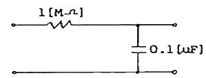
- 0.1초
- 0.22초
- 0.42초
- 0.62초
(정답률: 84%)
17. 전류직렬 부궤환회로에서 부궤환을 걸지 않았을 때 보다 증가되지 않는 것은?
- 출력 임피던스
- 입력 임피던스
- 비직선 왜곡
- 대역폭
(정답률: 50%)
18. TTL NAND gate에서 totem-pole형 출력 TR이 사용되는 주된 이유는?
- 팬-아웃(Fan-out) 수를 늘리기 위해서이다.
- 잡음 여유를 크게 하기 위함이다.
- 오동작을 방지하기 위함이다.
- 고속 스위칭 동작을 시키기 위해서이다.
(정답률: 60%)
19. 다음 중 논리식
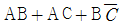
을 간단히 하면?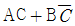
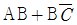
- AC + B
- AB + C
(정답률: 62%)
20. 여러 개의 입력 신호 가운데 하나를 선택하여 출력하는 동작을 하는 것은?
- 디멀티플렉서
- 멀티플렉서
- 레지스터
- 디코더
(정답률: 69%)
2과목: 정보통신기기
21. 통신위성에 이용되는 안테나의 종류가 아닌 것은?
- 야기 안테나
- 파라볼라 안테나
- 혼 안테나
- 헤릴컬 안테나
(정답률: 67%)
22. 뉴미디어의 분류 중 방송계에 해당되지 않는 것은?
- 위성TV 방송
- HDTV 방송
- VTR
- 문자다중 방송
(정답률: 84%)
23. 다음 중 전자교환방식과 관계없는 것은?
- 통화로계 및 제어계가 있다.
- 다양한 특수 서비스를 제공할 수 있다.
- 축적 프로그램 제어기술을 사용한다.
- X-bar 교환기가 대표적이다.
(정답률: 79%)
24. 다음 중 LAN의 액세스 제어방식이 아닌 것은?
- CSMA/CD
- TCP/IP
- Token bus
- Token ring
(정답률: 65%)
25. 다음 중 팩시밀리 통신에서 송신원고 내용을 베이스밴드의 전기신호로 바꾸는 과정은?
- Reflection
- Scanning
- Modulation
- Light variation
(정답률: 61%)
26. 무선통신 시스템에서 코드 열을 사용하는 확산 스펙트럼 다중 접속을 하는 기술로 아날로그 셀룰러에 비해 가입자 수용량이 많은 전송 방식은?
- SDMA
- CDMA
- FDMA
- TDMA
(정답률: 75%)
27. 다음 중 ITU-T의 DTE/DCE 간 인터페이스 표준규격이 아닌 것은?
- X 시리즈 권고안
- V 시리즈 권고안
- Q 시리즈 권고안
- I 시리즈 권고안
(정답률: 67%)
28. 정보전송시 광대역 변ㆍ복조기로 전송하는 주 목적은?
- 고속으로 데이터를 전송하기 위함
- 유선의 경제적인 운용 이점을 활용하기 위함
- 다채널의 시분할 신호로 변환하기 위함
- 신호의 감쇠를 보상하기 위함
(정답률: 74%)
29. RS-232C 25핀 표준 인터페이스에서 송신(TD)에 해당되는 핀은?
- 1번
- 2번
- 3번
- 4번
(정답률: 75%)
30. 전송 부호의 형식에서 일반적으로 요구되는 조건과 거리가 먼 것은?
- 비트 동기 정보의 추출이 쉬울 것
- 직류 차단 특성의 영향을 적게 받을 것
- 소요 전송 대역폭이 클 것
- 회선의 감시가 가능할 것
(정답률: 78%)
31. 다음 중 라우터(Router)에 대한 설명으로 옳은 것은?
- 네트워크 상에서 경로표를 사용하여 경로를 지정해주는 장치이다.
- 데이터링크 계층에서 중계를 하는 접속장치이다.
- 물리계층에서 연동하는 장치이다.
- 브리지와 같이 이더넷 네트워크안의 접속장치이다.
(정답률: 88%)
32. 동기식 데이터 전송에서 같은 디지트가 반복되어 동기신호를 상실하는 문제를 방지하기 위하여 송신측에서 전송되는 데이터 신호를 랜덤화 하기 위해 사용되는 것은?
- 채널 인코더
- 채널 디코더
- 프로토콜 제어기
- 스크램블러
(정답률: 90%)
33. 다음 중 이동통신 시스템에서 핸드오프(Hand-off) 기능을 수행하는 것은?
- 이동국(Mobile Station)
- 중계기(Repeater)
- 데이터 센터(Data Center)
- 이동전화 교환국(Mobile Telephone Switching Office)
(정답률: 73%)
34. 다음 정보를 전송하는 방식 중 축적교환방식이 아닌 것은?
- 회선교환방식
- 데이터그램 패킷교환방식
- 메시지교환방식
- 가상회선 패킷교환방식
(정답률: 59%)
35. 다음 중 G4 FAX 단말기에 사용되는 부호화 방식은?
- MR 방식
- MH 방식
- MMR 방식
- MMH 방식
(정답률: 84%)
36. 디지털 셀룰러 방식의 일반적인 특성이 아닌 것은?
- 소형 및 경량이다.
- 고속 데이터 전송이 가능하다.
- 다양한 서비스를 제공할 수 있다.
- 통화 품질은 수신 전력의 강도에 반비례한다.
(정답률: 80%)
37. 화상정보를 특정 목적으로 특정의 수신자에게 전달하여 보안, 감시 등 분야에 응용하는 화상정보 시스템은?
- CCTV
- CATV
- HDTV
- DTV
(정답률: 96%)
38. 광가입자망의 가입자별로 하나의 파장을 대응시켜 동기화 절차 없이 수백[Mbps]의 고속전송이 가능한 방식은?
- FDM 방식
- TDM 방식
- SDM 방식
- WDM 방식
(정답률: 86%)
39. 디지털 TV 방송기술의 장ㆍ단점에 대한 설명으로 틀린 것은?
- 영상 및 음향 신호의 압축이 용이하고 녹화재생시 화질이나 음질의 열화가 없다.
- 적은 대역폭으로 아날로그에 비해 많은 정보를 서비스 할 수 있다.
- 오류정정 기술을 사용할 수 있고 저장, 복제에 따른 손실이 적다.
- 상호간섭이 비교적 많고 신호의 열화가 완만하다.
(정답률: 81%)
40. 다음 CATV의 구성 중 전송계의 구성요소가 아닌 것은?
- 분배선
- 간섭증폭기
- 연장증폭기
- 헤드엔드
(정답률: 65%)
3과목: 정보전송개론
41. 원신호를 복원하기 위해서 샘플링 주파수는 샘플링되는 신호의 최고주파수에 비하여 최소한 몇 배 이상이 되어야 하는가?
- 1
- 2
- 3
- 4
(정답률: 82%)
42. 다음 중 디지털 변조방식이 아닌 것은?
- ASK
- PAM
- FSK
- QPSK
(정답률: 87%)
43. 4상 PSK 변조방식을 사용한 모뎀의 데이터 신호속도가 2400 비트/초 일 때 변조속도는 얼마인가?
- 1200 baud
- 1200 비트/초
- 2400 baud
- 4800 baud
(정답률: 54%)
44. 직렬전송방식과 비교한 병렬전송방식의 특징에 대한 설명 중 적합하지 않은 것은?
- 전송로의 비용이 상승한다.
- 주로 근거리 전송에 이용된다.
- 일반적으로 직ㆍ병렬 변환 회로가 필요하다.
- 전송속도가 빠르다.
(정답률: 77%)
45. 다음 중 PCM 방식에서 송신순서로서 옳은 것은?
- 음성 → 표본화 → 양자화 → 부호화 → 전송로
- 음성 → 양자화 → 표본화 → 부호화 → 전송로
- 음성 → 표본화 → 부호화 → 양자화 → 전송로
- 음성 → 양자화 → 부호화 → 표본화 → 전송로
(정답률: 80%)
46. 다음 중 PLL(Phase Locked Loop)의 구성이 아닌 것은?
- 위상 검출기
- 저역통과필터
- 나이퀴스트
- 전압제어 발진기
(정답률: 63%)
47. CRC 방식에서 입력데이터가 10101101일 때 이것의 다항식 표현 P(X)로 가장 적합한 것은?
- X7+X5+X3+X2+1
- X8+X6+X4+X3+1
- X12+X11+X3+X2+X1+1
- X16+X15+X2+1
(정답률: 84%)
48. 비트의 투명성을 유지하기 위해 플래그와 같은 비트 패턴이 나타나는 것을 방지하기 위해 다섯 개의 연속된 1 이 나타나면 그 다음에 0을 강제로 삽입하여 플래그와 혼동을 방지하는 것은?
- 비트 동기화
- 디스크램블(descramble)
- 비트 스터핑(bit stuffing)
- 정보 분리(information separator)
(정답률: 74%)
49. 마이크로파 전송에 대한 설명 중 가장 적합한 것은?
- 유지보수가 용이하다.
- 회선 건설기간이 길다.
- 가시거리내 통신으로 전파손실이 적다.
- 반송파 주파수가 낮아 협대역 전송이 가능하다.
(정답률: 60%)
50. OSI-7 프로토콜 중에서 물리계층이 하는 역할을 바르게 나타낸 것은?
- 회선의 제어 규약을 정의
- 회선의 전기적 규약을 정의
- 회선의 다중화 규약을 정의
- 회선의 유지보수 규약을 정의
(정답률: 60%)
51. 디지털 변조에 대한 설명 중 가장 적합하지 않은 것은?
- FSK는 잡음 및 방해에 강하다.
- QPSK에서 반송파간의 위상차는 60도이다.
- 위상의 불연속성을 해결한 FSK를 CPFSK라 한다.
- 180도 위상변화가 일어나지 않도록 한 QPSK를 OQPSK라 한다.
(정답률: 79%)
52. PCM 전송 방식에서 4[kHz]의 대역폭을 갖는 음성 정보를 7[bit] coding으로 부호화 한다면 음성을 전송하기 위한 데이터 전송률은?
- 8[kbps]
- 24[kbps]
- 56[kbps]
- 64[kbps]
(정답률: 76%)
53. 다중모드 광섬유에서 입사된 빛의 전파속도 차이로 생기는 분산은?
- 색분산
- 모드분산
- 재료분산
- 도파로분산
(정답률: 53%)
54. 다음 중 전송제어 절차의 순서로 가장 적합한 것은?
- 회선의 접속 → 정보의 전송 → 데이터링크 확립 → 데이터링크 해제 → 회선 절단
- 회선의 접속 → 데이터링크 확립 → 데이터링크 해제 → 정보의 전송 → 회선 절단
- 회선의 접속 → 데이터링크 확립 → 데이터링크 해제 → 회선 절단 → 정보의 전송
- 회선의 접속 → 데이터링크 확립 → 정보의 전송 → 데이터링크 해제 → 회선 절단
(정답률: 67%)
55. 다음 변조방식 중 discontinuity 현상이 생기는 방식은?
- ASK
- FSK
- PSK
- QPSK
(정답률: 48%)
56. PCM 방식에서 아날로그 신호의 최고주파수가 1kHz이고 표본화주파수가 10kHz일 때 1주기당 PAM 신호의 개수는?
- 8
- 10
- 16
- 32
(정답률: 79%)
57. 동축 케이블에서 반사 현상이 생기는 원인으로 가장 타당한 것은?
- 케이블 접속점에 임피던스 불균등점이 발생한 경우
- 내ㆍ외부 도체 간의 절연체로 폴리에틸렌을 사용한 경우
- 케이블의 외부도체를 철 테이프로 감았을 때
- 케이블의 외부피복을 코팅처리 하였을 때
(정답률: 53%)
58. 다음 전송 제어 문자 중 텍스트의 시작을 나타낼 때 사용하는 것은?
- SYN
- SOH
- STX
- ETX
(정답률: 79%)
59. HDLC 전송제어절차의 프레임에서 오류검사 필드에 일반적으로 사용하는 CRC(중복순환검사) 부호의 방식은?
- CRC-8
- CRC-12
- CRC-16
- CRC-32
(정답률: 62%)
60. BPSK의 전송 대역폭은 QPSK 전송 대역폭의 몇 배인가?
- 1/2
- 1/4
- 2
- 4
(정답률: 55%)
4과목: 전자계산기일반 및 정보설비기준
61. 채널(channel)에 대한 설명으로 옳은 것은?
- 중앙처리장치의 지시를 받아 독립적으로 입ㆍ출력 장치를 제어한다.
- 주기억장소를 각 프로세서에 할당한다.
- 주기억장치와 중앙처리장치 사이에 위치한다.
- 목적프로그램을 주기억장치에 적재한다.
(정답률: 57%)
62. 자료의 표현방식에서 한글/한자의 경우는 몇 비트로 표현 되는가?
- 1
- 4
- 8
- 16
(정답률: 42%)
63. 외부 또는 내부로부터 긴급 서비스의 요청에 의하여 CPU가 현재 실행중인 일을 중단하고, 그 요청에 합당한 서비스를 하는 것을 무엇이라고 하는가?
- 인터럽트(Interrupt)
- 명령(Command)
- 채널프로그램(Channel Program)
- 버스트 방식(Burst Mode)
(정답률: 80%)
64. 다음 자료(data)의 단위를 설명한 것 중 틀린 것은?
- 비트(bit)는 정보를 나타내는 최소단위이다.
- 바이트(byte)는 문자를 표시하는 최소단위이다.
- 필드(field)는 고유이름을 가진 논리적 자료의 최소단위이다.
- 파일(file)은 프로그램의 입ㆍ출력 단위이며 필드의 집합이다.
(정답률: 48%)
65. 10진수 1⑤를 8진수로 변환한 것으로 옳은 것은?
- 123
- 151
- 425
- 513
(정답률: 85%)
66. 다음 중 운영체제의 기본 목적이 아닌 것은?
- 처리 능력을 향상시키도록 한다.
- 조작법을 간략화 한다.
- 처리 시간을 단축한다.
- 특정한 프로그램 언어만 제공한다.
(정답률: 82%)
67. 스마트 더스트(Smart Dust) 프로젝트에 사용하기 위하여 개발된 컴포넌트 기반 내장형 운영체제로 센싱 노드와 같은 초저전력, 초소형, 저가의 노드에 저전력, 최소한의 하드웨어 리소스 사용을 목표로 하는 것은?
- 임베디드리눅스
- tinyOS
- palmOS
- 윈도 CE
(정답률: 74%)
68. 입ㆍ출력시 중앙처리장치가 입ㆍ출력의 완료 여부를 시험하는 명령을 수행해야 하므로 그 동안 다른 연산을 위해 중앙처리장치를 사용할 수 없는 가장 비효율적인 I/O 방식은?
- Programmed I/O
- Channel I/O
- Interrupt I/O
- Direct memory access I/O
(정답률: 30%)
69. 다음 마이크로 명령어에 대한 설명으로 틀린 것은?
- OP 코드 비트 수는 명령어 코드의 수를 나타낸다.
- OP 코드의 비트 수가 오퍼랜드의 비트 수 보다 길다.
- 오퍼랜드에는 주소, 데이터, 레지스터 등이 저장된다.
- 0-주소 명령어는 오퍼랜드의 주소 부분이 없는 명령 형식이다.
(정답률: 43%)
70. 다음 중 레지스터의 종류가 아닌 것은?
- Accumulator
- Program Counter
- Instruction Fetch
- Index register
(정답률: 48%)
71. 정보통신부장관이 전기통신의 원활한 발전과 정보사회의 촉진을 위하여 수립, 공고하여야 하는 전기통신기본계획에 포함되어야 하는 사항이 아닌 것은?
- 전기통신설비에 관한 사항
- 전기통신의 질서유지에 관한 사항
- 전기통신기술의 표준화에 관한 사항
- 전기통신기술의 진흥에 관한 사항
(정답률: 44%)
72. 통신위원회에 대한 설명 중 틀린 것은?(관련 규정 개정전 문제로 여기서는 기존 정답인 1번을 누르면 정답 처리됩니다. 자세한 내용은 해설을 참고하세요.)
- 통신위원회의 위원은 정보통신부장관이 임명 또는 위촉한다.
- 공무원이 아닌 위원의 임기는 3년으로 하되 연임할 수 있다.
- 통신위원회는 위원장 1인을 포함하여 9인 이내의 위원으로 구성한다.
- 전기통신사업자간 또는 전기통신사업자와 이용자간 분쟁의 재정을 하기 위하여 정보통신부에 둔다.
(정답률: 66%)
73. 다음 ( ) 안에 들어갈 내용으로 가장 적합한 것은?
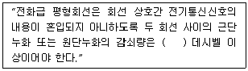
- 50
- 55
- 60
- 68
(정답률: 71%)
74. 다음 중 정보통신공사업자 만이 시공할 수 있는 공사는?
- 아마추어국의 무선설비 설치공사
- 간이무선국의 무선설비 설치공사
- 연면적이 650제곱미터인 건축물의 구내방송설비의 설비공사
- 허브 증설을 수반하는 6회선의 근거리통신망 선로의 증설공사
(정답률: 64%)
75. 다음 중 정보통신부장관이 체신청장에게 위임하는 사항이 아닌 것은?
- 감리원의 업무정지
- 정보통신기술자의 업무정지
- 정보통신기술인력의 양성 및 안정교육에 관한 업무
- 정보통신공사업법 제78조 규정에 의한 과태료의 부과ㆍ징수
(정답률: 61%)
76. 다음 중 전기통신기본법의 목적으로 적합하지 않은 것은?
- 전기통신에 관한 기본적인 사항을 정함
- 전기통신을 효율적으로 관리함
- 전기통신 이용자의 편의를 도모함
- 국민 복리의 증진에 이바지함
(정답률: 62%)
77. “전기통신망에 접속되는 단말기기 및 그 부속설비”로 정의되는 것은?
- 전송장치
- 정보설비
- 단말장치
- 선로설비
(정답률: 67%)
78. 공사를 설계한 용역업자는 그가 작성 또는 제공한 실시 설계도서를 당해 공사가 준공된 후 몇 년간 보관하여야 하는가?
- 3년
- 5년
- 7년
- 10년
(정답률: 75%)
79. 정보통신공사업 관련 법령에서 정한 공사의 종류에 해당하지 않는 것은?
- 전산망 설비공사
- 방송국 설비공사
- 통신선로 설비공사
- 이동통신 설비공사
(정답률: 39%)
80. 정보통신공사업의 등록기준에 포함되지 않는 것은?
- 사무실
- 자본금
- 공시경력
- 기술능력
(정답률: 70%)
lc = α × lB + lco
여기에 주어진 값들을 대입하면,
lc = 0.98 × 10[㎃] + 100[㎂] = 11.8[㎃]
하지만, 단위가 [㎃]으로 주어지지 않았으므로, [㎂]으로 변환해준다.
lc = 11.8[㎃] = 11,800[㎂] ≈ 495[㎃]
따라서, 정답은 "495[㎃]"이다.